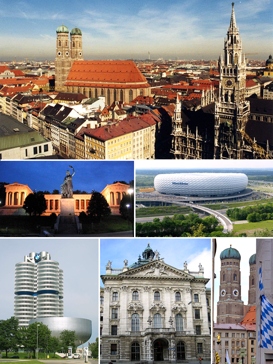

Мю́нхен (нем. München [ˈmʏnçən], бав. Minga, лат. Monacum, Monachium) — город на реке Изар, на юге Германии, в федеральной земле Бавария. Внерайонный город (нем. kreisfreie Stadt), одновременно являющийся административным центром Баварии и административного округа Верхняя Бавария.
Название города произошло от древневерхненемецкого Munichen — «у монахов». Мюнхен славится своими пивоваренными традициями. В городе находятся шесть крупных пивоварен, которые снабжают пивом знаменитый на весь мир Октоберфест — фольклорный фестиваль, ежегодно проводящийся в конце сентября — начале октября на Терезином лугу. Современный Мюнхен — не только средоточие культурных ценностей, но и крупный промышленный и исследовательский центр. Благодаря знаменитым университетам, одной из самых значительных в мире Баварской государственной библиотеке, институтам имени Макса Планка и имени Хайнца Майера-Лейбница, ядерному научно-исследовательскому реактору и многим другим учреждениям Мюнхен удерживает прочные позиции в европейской науке. Также Мюнхен по праву считается ИТ-столицей Германии.
| Население 2018 - 2023 гг. по полу и национальности | |||||
| Год (31.12. в каждом случае) | Всего | Из этого | Из этого | ||
| Мужчины | Женщины | С Германии | Не из Германии | ||
| 2018 | 1 542 211 | 761 663 | 780 548 | 1 108 919 | 433 292 |
| 2019 | 1 560 042 | 771 001 | 789 041 | 1 115 288 | 444 754 |
| 2020 | 1 562 096 | 772 277 | 789 819 | 1 116 110 | 445 986 |
| 2021 | 1 562 128 | 772 271 | 789 857 | 1 111 737 | 450 391 |
| 2022 | 1 588 330 | 784 347 | 803 983 | 1 110 016 | 478 314 |
| 2023 | 1 589 026 | 783 915 | 805 111 | 1 111 171 | 477 855 |